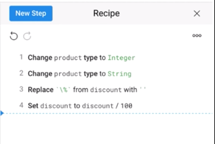

Problema:Mostrar las acciones ejecutadas sobre un conjunto de datos genómicos, ordenadas por su secuencia de ejecución.

Presentar un listado de ítems donde cada ítem representa una acción realizada por el usuario en el análisis de datos. Por cada acción realizada, un ítem es agregado a la lista de acciones. Así, el orden de acciones se conserva. Cada ítem de la lista puede ser editado o eliminado por el usuario. Si aplica, cada ítem debe indicar el número de datos resultantes después de aplicar la acción.
Esta solución evita la sobrecarga de cognitiva del usuario de memorizar cada acción realizada sobre el conjunto de datos. El usuario puede revisar las acciones realizadas en el análisis de datos genómico e incluso repetir la secuencia de acciones. La lista de acciones es de mucha ayuda si se necesita evidenciar los resultados.
El patrón se crea instanciando la clase “ActionPanel” que representa a un panel de la interfaz de usuario que presenta la secuencia de acciones realizadas sobre los componentes de la interfaz de usuario (clase “UIComponent”). En efecto, el atributo “ActionPanel.components” contiene las referencias a los componentes que están conectados al panel de acciones. Cuando el usuario realiza una acción sobre el componente (“UIComponent.performAction()”), esta acción se agrega (“ActionPanel.addAction()”) a la lista de acciones (“ActionPanel.listActions”) del panel, respetando el orden de ejecución de las acciones.
Si el usuario edita una acción registrada en el panel de acciones, el evento “ActionPanel.editAction()” se ejecuta y despliega el UIComponent para editar los valores de la acción. Si el usuario elimina una acción, la acción es eliminada de la lista de acciones del panel.
En la Imagen 6.13, la sección “Included Filters” (etiqueta 1) muestra la secuencia de cuatro filtros (Projects, Clinical Defaults, Clinical Significance y GENESIS Allele Counts) aplicados por el usuario a un conjunto de datos de secuencia genética. La etiqueta 1 resalta el filtro “Clinical Significance” el cual se ha pulsado sobre el ícono de lápiz para ser editado. El formulario de edición del filtro “Clinical Significance” se muestran en la etiqueta 2. El formulario en la etiqueta 2 es diferente por cada uno de los ítems de la lista de filtros seleccionados.